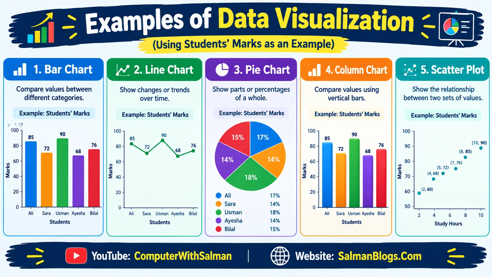

Data Science
Data Science is the process of collecting, studying, and understanding data to find useful information and make better decisions.
Example
A school can study students' marks and attendance to find out which students need more help.
Data Science = Collect data → Study data → Find useful information → Make decisions.
Importance of Data in Decision Making
Data is important in decision making because it provides useful information and facts that help people make better decisions.
Importance of Data
- Better Decisions
- Identify Problems
- Find Trends
- Improve Performance
- Reduce Risk
Real-Life Applications of Data Science
1. Social Media
Data science is used to understand user interests and recommend content.
Example: YouTube recommends videos based on videos you have watched.
2. Online Shopping
Data science is used to recommend products based on user activity.
Example: An online store recommends products similar to the ones you searched for.
3. Healthcare
Data science is used to analyze patient information and help detect diseases.
Example: Doctors can analyze patient data to identify possible health problems.
4. Transport
Data science is used to analyze traffic and find better routes.
Example: Google Maps analyzes traffic data to suggest a faster route.
5. Education
Data science is used to analyze students' performance and identify areas for improvement.
Example: A school analyzes students' marks to identify students who need extra help.
Data Science Life Cycle
The Data Science Life Cycle is a series of steps used to collect, clean, analyze, understand, and present data to solve a problem.
1. Understanding the Problem
The first step is to clearly understand what problem needs to be solved.
Identifying and Defining a Problem
Identify the problem and describe it clearly.
Example: A school wants to find out why students' marks are decreasing.
Setting Clear Objectives
Decide what you want to achieve from the data.
Example: Find the main reasons for low marks and identify students who need extra help.
2. Collecting Data
Data collection means gathering the required data from different sources.
Methods of Collecting Data
-
Surveys: Collect information directly from people using
questions.
Example: Asking students about their study habits. -
APIs and Online Sources: Collect data from websites or
online services through APIs (Application Programming
Interfaces). An API allows a program to request specific data
from an online service and receive it in a usable format.
Example: A weather application can use a weather API to request information such as temperature, humidity, and rainfall from an online weather service. The application then displays this data to the user. -
IoT and Sensor Data: Collect data from connected devices
and sensors.
Example: A temperature sensor records room temperature. -
Web Scraping: Collect information from webpages using
software or scripts.
Example: Collecting product prices from an online store.
Choosing the Right Data Source
Not all data is useful. We should choose reliable, accurate, and relevant data sources. When selecting a data source, ask:
- Is the data from a trusted source?
- Is the data recent or outdated?
- Does the data match the problem I want to solve?
Example from book: If we want to know the favorite snacks of students in 2025, we should avoid using a survey conducted in 2020 because students' preferences may have changed.
Other simple and better examples:
- Weather: Take data from a trusted weather service, not an unknown or unreliable website.
- Education: Take data from official school records, not random online sources.
- Business: Take data from company sales records, not unverified data from social media.
Assessing Data Quality and Bias
Data quality means checking whether the data is:
- Complete: No important values are missing.
- Correct: The data does not contain mistakes.
- Relevant: The data matches the problem we are trying to solve.
Bias means the data does not represent the full picture and may unfairly favor one group or viewpoint.
Example: If we only survey boys about their favorite sports, we will miss the opinions of girls. The results may therefore be biased toward boys.
Remember the following to avoid bias:
- Ask different types of people.
- Keep questions neutral and not leading.
- Review the data for unusual or strange patterns.
3. Cleaning and Validating Data
Raw Data
Raw data is the original data collected before it is cleaned or processed.
Example: A student marks file containing missing marks or incorrect entries.
Common Data Errors
- Missing Data: Some values are not available.
- Duplicate Data: The same record appears more than once.
- Outliers: Values that are unusually high or low compared with other values.
Missing Data
Some values are not available or are left empty.
| Student | Marks |
|---|---|
| Ali | 85 |
| Ahmed | — |
| Sara | 92 |
| Hamza | 78 |
Solution for Missing Data
If a value is missing, we can use mean, median, or mode to estimate a suitable value.
| Student | Marks |
|---|---|
| Ali | 80 |
| Ahmed | — |
| Sara | 90 |
| Hamza | 70 |
For example, using the mean (average):
So, we can fill Ahmed's missing marks with 80.
Duplicate Data
The same record appears more than once.
| Student | Marks |
|---|---|
| Ali | 85 |
| Sara | 92 |
| Ali | 85 |
| Hamza | 78 |
Solution: Identify and remove the duplicate record.
| Student | Marks |
|---|---|
| Ali | 85 |
| Sara | 92 |
| Hamza | 78 |
Outliers
A value is unusually high or low compared with other values.
| Student | Marks |
|---|---|
| Ali | 82 |
| Sara | 88 |
| Ahmed | 5 |
| Hamza | 85 |
Solution: Check the original source to see if the value is correct. If it is a mistake, correct or remove it.
| Student | Marks |
|---|---|
| Ali | 82 |
| Sara | 88 |
| Ahmed | 85 |
| Hamza | 85 |
Data Validation Techniques
Data validation means checking whether the collected data is correct, valid, and follows the required rules.
-
Follows correct rules: Only allowed values are entered.
Example: If the available sports are Cricket, Football, and Hockey, "Tennis" should not be entered. -
Has the right type of values: The correct type of data is
entered.
Example: Age should contain numbers, not words. -
Is not fake or silly: The data should be
realistic and make sense.
Example: A student's marks cannot be 150 out of 100.
Data Cleaning
Data cleaning is the process of finding and correcting or removing incorrect, incomplete, duplicate, or unnecessary data.
Data Cleaning Methods
- Fill or remove missing values.
- Remove duplicate records.
- Correct incorrect values.
- Handle unusual or incorrect outliers.
- Use a consistent format.
Why Cleaning Data Matters
Clean data helps us get accurate analysis and reliable results by removing errors, missing values, and duplicate records.
Example: If a school's student records contain incorrect marks, the analysis of student performance may give wrong results.
4. Analyzing Data
What Does It Mean to Analyze Data?
Data analysis means studying data to find useful information, patterns, relationships, and trends.
Example: Comparing students' attendance and marks to see whether attendance affects performance.
Simple Tools for Data Analysis
Data can be analyzed using simple tools such as:
- Google Sheets
- Microsoft Excel
- Manual calculations and tables in a notebook
5. Interpreting Data
Data interpretation means understanding what the results of data analysis actually mean.
Example: After analyzing attendance and marks, we may find that students with higher attendance generally have better marks.
6. Visualizing and Communicating Results
After analyzing and interpreting data, the results are presented in a way that is easy to understand.
Importance of Data Visualization
Data visualization means presenting data using charts, graphs, and other visual forms.
It helps to:
- Understand data easily.
- Identify patterns and trends.
- Compare information.
- Communicate results clearly.
Tools for Visualization
- Google Sheets
- Microsoft Excel
Examples of Data Visualization
- Bar Chart: Compare values between different categories.
- Line Chart: Show changes or trends over time.
- Pie Chart: Show parts or percentages of a whole.
- Column Chart: Compare values using vertical bars.
- Scatter Plot: Show the relationship between two sets of values.

Databases and Storing Data
What is a Database?
A database is an organized collection of data that can be stored, managed, and accessed easily.
Example: A school's database can store students' names, classes, marks, and attendance.
Table
A table stores data in rows and columns.
Example:
| ID | Name | Class |
|---|---|---|
| 1 | Ali | 9 |
| 2 | Ahmed | 9 |
Record
A record is a complete row of data about one item or person.
Example: 1 | Ali | 9 is one student record.
Field
A field is a single type of information stored in a column.
Example: Name, Class, and
ID are fields.
DBMS
DBMS (Database Management System) is software used to create, store, manage, and access data in databases.
Examples: MySQL, Microsoft Access, and PostgreSQL.
What Can We Do in a DBMS?
A DBMS allows us to perform different operations on data, such as:
- Create databases and tables.
- Store data in an organized way.
- Insert new records.
- Update existing data.
- Delete unwanted data.
- Search and retrieve required data.
- Sort and filter data.
- Protect data using security and access controls.
- Create backups to prevent data loss.
SQL
SQL (Structured Query Language) is a language used to communicate with and manage databases using commands. These commands allow us to create databases and tables, insert, retrieve, update, and delete data.
Example: We can use SQL commands to add a student's record, search for a student's marks, update their information, or delete a record.
Students Table
Suppose we have the following Students table:
| ID | Name | Class |
|---|---|---|
| 1 | Ahmed | 9 |
| 2 | Sara | 9 |
| 3 | Hamza | 10 |
SELECT
The SELECT command is used to retrieve data
from a database.
SELECT * FROM Students;
This command retrieves all fields/columns and all records
from the Students table.
| ID | Name | Class |
|---|---|---|
| 1 | Ahmed | 9 |
| 2 | Sara | 9 |
| 3 | Hamza | 10 |
Here, * means all fields/columns.
INSERT
The INSERT command is used to add new data
to a table.
INSERT INTO Students (Name, Class)
VALUES ('Ali', 9);
Before using the INSERT command, the table contains:
| ID | Name | Class |
|---|---|---|
| 1 | Ahmed | 9 |
| 2 | Sara | 9 |
| 3 | Hamza | 10 |
After running the INSERT command, a new record for
Ali is added:
| ID | Name | Class |
|---|---|---|
| 1 | Ahmed | 9 |
| 2 | Sara | 9 |
| 3 | Hamza | 10 |
| 4 | Ali | 9 |
Easy to Remember
| Command | Action |
|---|---|
SELECT |
Get data |
INSERT |
Add data |
* |
All fields/columns |
Exercise – Short Questions
1. What is the importance of understanding a problem before collecting data?
Understanding the problem helps us know what data to collect and ensures that the data is relevant and useful.
Example: If we want to find students' favorite sports, we should collect data about their sports preferences.
2. Name any two methods of collecting data and give one example of each.
See Topic Methods of Collecting Data.3. What do we mean by "cleaning" data?
Data cleaning means finding and correcting or removing errors, such as missing, duplicate, or incorrect data.
Example: Removing a student's duplicate record from a student database.
4. Why is it important to validate data before using it?
Data validation ensures that the data follows the correct rules, has the right type of values, and is realistic.
Example: A student's marks should be a number between 0 and 100.
5. What is the purpose of visualizing data using charts?
Data visualization helps us understand, compare, and identify patterns or trends in data more easily.
Example: A bar chart can quickly show which student has the highest marks.
6. How does bias in data affect results?
Bias can make the results unfair or inaccurate because the data may not represent the full picture.
Example: If we ask only boys about their favorite sports, the results may not represent the opinions of girls.
7. Write two steps you will follow to clean a messy survey.
-
Find and handle missing or incorrect values.
Example: Find a missing student's age from the original survey. -
Find and remove duplicate records.
Example: Remove a student's record if it appears twice.
8. Name any two tools used for creating charts.
Two tools used for creating charts are Microsoft Excel and Google Sheets.
Example: We can use Excel to create a bar chart of students' marks.
Example: Data Science Life Cycle – Calculating Students' Marks
Suppose a teacher wants to calculate and analyze the average marks of students in a class. We can use the Data Science Life Cycle to solve this problem.
1. Understanding the Problem
First, we clearly understand what we want to find out. Here, our goal is to calculate the average marks of students and understand their performance.
Example: We want to find the average marks of 5 students in a Computer Science test.
2. Collecting Data
We collect the required data, such as the names of students and their marks.
| Student | Marks |
|---|---|
| Ali | 80 |
| Ahmed | 75 |
| Sara | 90 |
| Hamza | 65 |
| Ayesha | 85 |
Example: The teacher can collect the marks from the students' test papers or school records.
3. Cleaning Data
We check the collected data for missing, duplicate, or incorrect values and correct them.
Example: If Ahmed's marks are entered as 750 instead of 75, we check the original test paper and correct the value.
4. Validating Data
We check whether the data follows the required rules and has the correct type and reasonable values.
Example: Since the test is out of 100 marks, every student's marks should be between 0 and 100.
5. Analyzing Data
We perform calculations on the cleaned and validated data to get useful information.
To calculate the average:
Average = (80 + 75 + 90 + 65 + 85) ÷ 5
Average = 395 ÷ 5 = 79
Example: The average marks of the 5 students are 79 marks.
6. Visualizing Data
We can represent the data using charts to make it easier to understand and compare.
Example: We can create a bar chart showing the marks of Ali, Ahmed, Sara, Hamza, and Ayesha.
| Student | Marks |
|---|---|
| Ali | 80 |
| Ahmed | 75 |
| Sara | 90 |
| Hamza | 65 |
| Ayesha | 85 |
7. Communicating Results
Finally, we present the results to others in a simple and understandable way.
Example: The teacher can report that the class average is 79 marks and show the bar chart to compare the students' performance.
Complete Example at a Glance
| Life Cycle Step | What We Do | Example |
|---|---|---|
| 1. Understanding the Problem | Define what we want to find. | Find the average marks of students. |
| 2. Collecting Data | Gather the required data. | Collect students' names and marks. |
| 3. Cleaning Data | Find and correct errors. | Correct 750 to 75 if it was entered incorrectly. |
| 4. Validating Data | Check whether data follows the rules. | Marks must be between 0 and 100. |
| 5. Analyzing Data | Perform calculations. | Calculate the average = 79 marks. |
| 6. Visualizing Data | Represent data using charts. | Create a bar chart of students' marks. |
| 7. Communicating Results | Present the findings. | Report the class average and show the chart. |
Multiple Choice Questions (MCQs) on Data Science
Test Yourself: Interactive MCQs (Data Science)
Multiple Choice Questions (MCQs) on Data Science, Databases & SQL
FAQs
Data Science, Databases & SQL FAQs
Data Science is the process of collecting, studying, and understanding data to find useful information and make better decisions.
Data helps make better decisions, identify problems, find trends, improve performance, and reduce risks.
Data Science is used in social media, online shopping, healthcare, transportation, and education. For example, Google Maps analyzes traffic data to suggest faster routes.
The Data Science Life Cycle is a series of steps used to collect, clean, analyze, understand, and present data to solve a problem.
The first step is understanding the problem. It involves identifying and defining the problem and setting clear objectives.
Common methods include surveys, APIs and online sources, IoT and sensor data, and web scraping.
API stands for Application Programming Interfaces. It allows a program to request specific data from a service and receive it in a usable format.
Web scraping is the process of collecting information from webpages using software or scripts. For example, a program can collect product prices from different webpages.
Data quality refers to how complete, correct, and relevant the collected data is.
Data bias occurs when data does not represent the full picture and may unfairly favor a particular group or viewpoint. For example, surveying only boys about favorite sports can produce biased results.
Raw data is the original data collected before it is cleaned or processed.
Common data errors include missing data, duplicate data, and outliers.
An outlier is a value that is unusually different from other values in a dataset. An outlier should be checked before it is changed or removed because it is not always an error.
Data validation is the process of checking whether data is correct, valid, follows required rules, has the right data type, and contains realistic values.
Data cleaning is the process of finding, correcting, or removing incorrect, incomplete, duplicate, or unnecessary data.
Data cleaning is important because clean data helps produce accurate analysis and reliable results. Incorrect data can lead to wrong conclusions.
Data analysis is the process of studying data to find useful information, patterns, relationships, and trends.
Data interpretation is the process of understanding what the results of data analysis actually mean.
Data visualization is the process of presenting data using charts, graphs, and other visual forms to make information easier to understand.
Common charts include bar charts, line charts, pie charts, column charts, and scatter plots. A line chart is commonly used to show changes or trends over time.
A database is an organized collection of data that can be stored, managed, and accessed easily. For example, a school database can store students' names, classes, marks, and attendance.
A table is a structure in a database that organizes data into rows and columns.
A record is a complete row in a database table that contains information about one item or person.
A field is a single type of information stored in a column of a database table. For example, Name, Class, and ID can be fields.
DBMS stands for Database Management System. It is software used to create, store, manage, and access data in databases.
Examples of DBMS include MySQL, Microsoft Access, and PostgreSQL.
A DBMS can be used to create databases and tables, store data, insert, update, delete, search, retrieve, sort, filter, protect, and back up data.
SQL stands for Structured Query Language. It is a language used to communicate with and manage databases using commands.
The SELECT command is used to retrieve data from a database table. For example, SELECT * FROM Students; retrieves all fields and records from the Students table.
The asterisk (*) means all fields or columns. For example, SELECT * FROM Students; retrieves all columns from the Students table.
The INSERT command is used to add new data to a database table. For example, INSERT INTO Students (Name, Class) VALUES ('Ali', 9); adds a new student record.